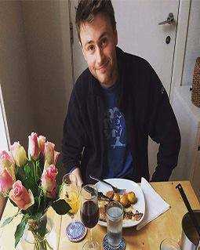

Litt om meg selv:

Jeg heter Peder og jeg studerer Data-Ingeniør på
Høyskolen i bergen Jeg er 23 år og bor i
Sandviken i Bergen. Her bor jeg med min samboer. Jeg har bodd i Bergen
meste parten av livet.
Etter videregående har jeg jobbet på Meny og tatt
opp igjen en god del fag fra videregående skole. Jeg gikk et par år på danielsen intensiv
i forbindelse med dette. Jeg har alltid vært interessert i data, men usikker på valg av utdanning.
Et år etter VGS, var målet å bli noe i livet, og det var Data-ingeniør!
Ting eg liker på fritiden!
Når jeg har fri liker eg å ta noen kalde pils med gamle, og nye venner. Jeg digger å gå på tur i fjellet enten det er med ski, sykkel eller bare gåing! Dra med seg et telt og en fullstappet sekk med mat og drikke- finnes ikke noe bedre sted å nyte dette, enn på fjellet! Når jeg ikke er på fjellet, er jeg på festival, jeg elsker å dra på festivaler, iallefall Roskilde-festival, hvor jeg var ifjord og så McCartney.
Jeg brygger også øl på fritiden. Jeg pleier å dra til hytten våres i sunnfjord, hvor vi har en kjeller som er perfekt til brygging! Dette er en hobby jeg deler med min bror. Vi reiser opp til sogn. Lager øl og smaker på ølet! Vi får som oftest veldig god øl, men det hender at det også kan smake pyton :D
| Personer | Klasse | |
|---|---|---|
| Colin | Email Colin | 16HDATA |
| Jacob | Email Jacob | 16HDATA |
| Kristoffer-Andre | Email Kristoffer-Andre | 16HDATA |
| Peder | Email Peder | 16HDATA |